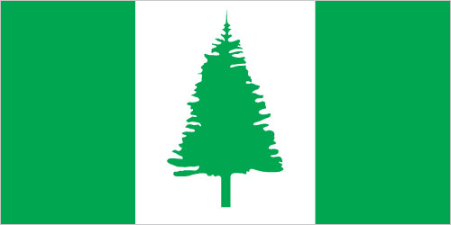

Australia-Oceania :: NORFOLK ISLAND
Introduction :: NORFOLK ISLAND
-
Two British attempts at establishing the island as a penal colony (1788-1814 and 1825-55) were ultimately abandoned. In 1856, the island was resettled by Pitcairn Islanders, descendants of the Bounty mutineers and their Tahitian companions.
Geography :: NORFOLK ISLAND
-
Oceania, island in the South Pacific Ocean, east of Australia29 02 S, 167 57 EOceaniatotal: 36 sq kmland: 36 sq kmwater: 0 sq kmcountry comparison to the world: 236about 0.2 times the size of Washington, DC0 km32 kmterritorial sea: 12 nmexclusive fishing zone: 200 nmsubtropical; mild, little seasonal temperature variationvolcanic island with mostly rolling plainsmean elevation: NAelevation extremes: lowest point: Pacific Ocean 0 mhighest point: Mount Bates 319 mfishagricultural land: 25%arable land 0%; permanent crops 0%; permanent pasture 25%forest: 11.5%other: 63.5% (2011 est.)0 sq km (2012)population concentrated around the capital of Kingstontropical cyclones (especially May to July)inadequate solid waste management; freshwater obtained through rainwater catchment; deficient electrical networkmost of the 32 km coastline consists of almost inaccessible cliffs, but the land slopes down to the sea in one small southern area on Sydney Bay, where the capital of Kingston is situated
People and Society :: NORFOLK ISLAND
-
1,748 (2016 est.)country comparison to the world: 231noun: Norfolk Islander(s)adjective: Norfolk Islander(s)Australian 79.5%, New Zealander 13.3%, Fijian 2.5%, Filipino 1.1%, English 1%, other 1.8%, unspecified 0.8% (2011 est.)English (official) 67.6%, other 32.4% (includes Norfolk 23.7% - also known as Norfuk or Norf'k - which is a mixture of 18th century English and ancient Tahitian) (2011 est.)Protestant 49.6% (Anglican 33.6%, Uniting Church in Australia 12.8%, Seventh Day Adventist 3.2%), Roman Catholic 11.7%, other 8.6%, none 23.5%, unspecified 6.6% (2011 est.)0.01% (2014 est.)country comparison to the world: 191population concentrated around the capital of KingstonNAtotal: NAmale: NAfemale: NAtotal population: NAmale: NAfemale: NA (2017 est.)NANANANA
Government :: NORFOLK ISLAND
-
conventional long form: Territory of Norfolk Islandconventional short form: Norfolk Islandetymology: named by British explorer Captain James COOK after Mary HOWARD, Duchess of Norfolk, in 1774self-governing territory of Australia; administered from Canberra by the Department of Regional Australia, Local Government, Arts, and Sportnon-self-governing overseas territory of Australia; note - the Norfolk Island Regional Council, which began operations 1 July 2016, is responsible for planning and managing a variety of public services, including those funded by the Government of Australianame: Kingstongeographic coordinates: 29 03 S, 167 58 Etime difference: UTC+11 (16 hours ahead of Washington, DC, during Standard Time)none (territory of Australia)none (territory of Australia)Bounty Day (commemorates the arrival of Pitcairn Islanders), 8 June (1856)previous 1913, 1957; latest effective 7 August 1979; amended many times, last in 2015 (2016)English common law and the laws of Australiasee Australia18 years of age; universalchief of state: Queen ELIZABETH II (since 6 February 1952); represented by Governor General of the Commonwealth of Australia General Sir Peter COSGROVE (since 28 March 2014)head of government: Administrator Eric HUTCHINSON (since 1 April 2017)cabinet: Executive Council consists of 4 Legislative Assembly memberselections/appointments: the monarchy is hereditary; governor general appointed by the monarch; administrator appointed by the governor general of Australia for a 2-year term and represents the monarch and Australiadescription: unicameral Norfolk Island Regional Council (5 seats; councillors directly elected by simple majority vote to serve 4-year terms); mayor elected annually by the councillorselections: elections last held 28 May 2016 (next to be held in 2020)election results: seats by party - independent 5note: following an administrative restructuring of local government, the Legislative Assembly was dissolved on 18 June 2015 and replaced by an interim Norfolk Island Advisory Council effective 1 July 2015; the Advisory Council consisted of 5 members appointed by the Norfolk Island administrator based on nominations from the community; following elections on 28 May 2016, the new Norfolk Island Regional Council commenced operations on 1 July 2016highest court(s): Supreme Court of Norfolk Island (consists of the chief justice and several justices); note - appeals beyond the Supreme Court of Norfolk Island are heard by the Federal Court and the High Court of Australiajudge selection and term of office: justices appointed by the governor general of Australia from among justices of the Federal Court of Australia; justices serve until mandatory retirement at age 70subordinate courts: Petty Court of Sessions; specialized courts including a Coroner's Court and the Employment TribunalNorfolk Island Labor Party [Mike KELLY]Norfolk Liberals [John BROWN]noneUPUnone (territory of Australia)none (territory of Australia)three vertical bands of green (hoist side), white, and green with a large green Norfolk Island pine tree centered in the slightly wider white band; green stands for the rich vegetation on the island, and the pine tree - endemic to the island - is a symbol of Norfolk Islandnote: somewhat reminiscent of the flag of Canada with its use of only two colors and depiction of a prominent local floral symbol in the central white band; also resembles the green and white triband of NigeriaNorfolk Island pinename: "Come Ye Blessed"lyrics/music: New Testament/John Prindle SCOTTnote: the local anthem, whose lyrics consist of the words from Matthew 25:34-36, 40, is also known as "The Pitcairn Anthem;" as a territory of Australia, "God Save the Queen" is official (see Australia); however, the island does not recognize "Advance Australia Fair"
Economy :: NORFOLK ISLAND
-
Norfolk Island is suffering from a severe economic downturn. Tourism, the primary economic activity, is the main driver of economic growth. The agricultural sector has become self-sufficient in the production of beef, poultry, and eggs.$NANorfolk Island pine seed, Kentia palm seed, cereals, vegetables, fruit; cattle, poultrytourism, light industry, ready mixed concrete978 (2006)country comparison to the world: 230agriculture: 6%industry: 14%services: 80% (2006 est.)revenues: $4.6 millionexpenditures: $4.8 million (FY99/00)1 July - 30 June$NApostage stamps, seeds of the Norfolk Island pine and Kentia palm, small quantities of avocados$NANA$NAAustralian dollars (AUD) per US dollar -1.3442 (2016)1.3291 (2015)1.3291 (2014 est.)1.1094 (2013 est.)0.9695 (2012 est.)
Communications :: NORFOLK ISLAND
-
general assessment: adequatedomestic: free local callsinternational: country code - 672; submarine cable links with Australia and New Zealand; satellite earth station - 11 local radio station; broadcasts of several Australian radio and TV stations available via satellite (2009).nftotal: 765percent of population: 34.6% (July 2016 est.)
Transportation :: NORFOLK ISLAND
-
1 (2013)country comparison to the world: 229total: 11,524 to 2,437 m: 1 (2017)total: 80 kmpaved: 53 kmunpaved: 27 km (2008)country comparison to the world: 217major seaport(s): Kingston
Military and Security :: NORFOLK ISLAND
-
defense is the responsibility of Australia
Transnational Issues :: NORFOLK ISLAND
-
none